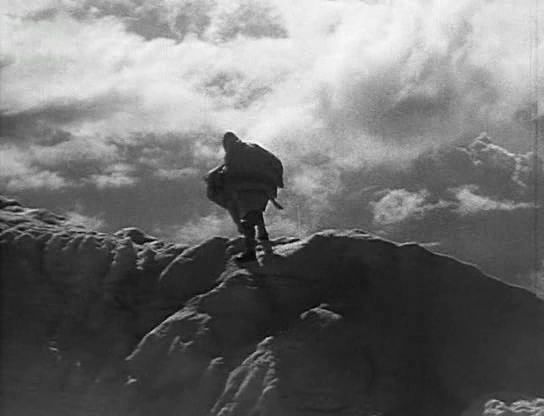

Monday, April the 20th, 2009
back to: title, date or indexes
Here is a very rare photograph of Dobson hiking in the mountains:

UPDATE : A particularly rigorous Dobsonist has written a hot-headed letter insisting that this is not a photograph of the out of print pamphleteer, but is in fact a still from Arnold Fanck's 1930 “mountain film” Stürme über dem Montblanc.